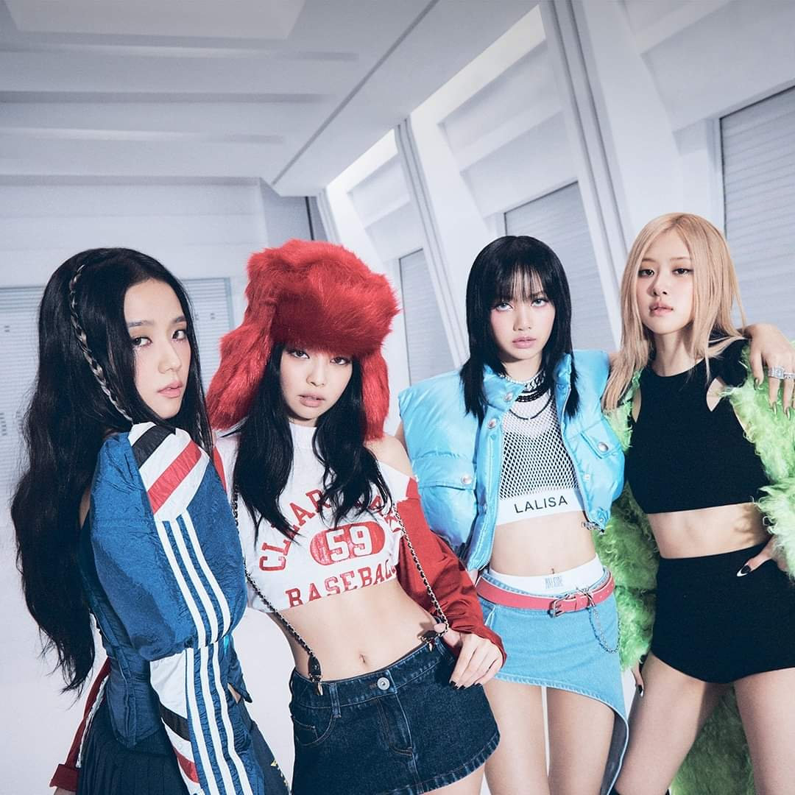

BLACKPINK

About blackpink
Blackpink (Hangul: 블랙핑크), stylized as BLACKPINK or BLΛƆKPIИK,
is a South Korean girl group formed by YG Entertainment and the first girl group to debut under the same entertainment company seven years after 2NE1.
The group consists of four members: Jennie, Lisa, Jisoo, and Rosé. They officially debuted on August 8, 2016 with the single album Square One. Blackpink's fans are called "Blink",
a name which means the fans start with Blackpink and end with Blackpink.
2010–2016: Formation and pre-debut activities
Blackpink began forming when YG Entertainment held tryouts worldwide for preteen or teenage recruits to create a new girl group after launching its first major one, 2NE1, in 2009. According to the members, joining the label as trainees was akin to enrolling in a full-time pop-star academy, with Jennie describing the experience as "more strict than school" and Rosé comparing it to The X Factor with dorm rooms. For members who had left their lives outside of South Korea, the pace of training alongside the culture shock was especially difficult.[14] Preparations for Blackpink's debut began as early as 2011, when YG Entertainment revealed on November 14 that their new girl group would debut in the early half of 2012 and feature at least seven members.[15] Since then, numerous news and rumors surfaced surrounding the new girl group's debut being delayed, although there had been no official information.[16][17] It was only on May 18, 2016, that YG Entertainment confirmed the girl group would debut that July, stating that the members were selected through years of stiff competition.[18] The label later confirmed that Jang Hanna and Moon Sua, who were introduced to the public as potential members of the new girl group, were not included in the lineup.[19][20]
Jennie was the first group member revealed, on June 1, 2016.[21]
She joined YG Entertainment as a trainee in 2010 after moving back to South Korea from New Zealand.[22] She had been introduced to the public for the first time in 2012 in a photo titled "Who's that girl?" on YG Entertainment's website on April 10.[23] Jennie continued to be promoted as a member of the new girl group through multiple collaborations: she starred in G-Dragon's 2012 music video for "That XX" from his One of a Kind EP and featured in the song "Black" from his 2013 album Coup d'etat (2013) and Lee Hi's song "Special" from her album First Love (2013).[24][25][26]
Lisa was revealed as the new girl group's second member on June 8, 2016.[27] She was the only individual among 4,000 applicants to pass the 2010 YG Entertainment audition in her native country Thailand and became the label's first foreign trainee in 2011.[22] She was first introduced in May 2012 in a video that was posted on YG Entertainment's YouTube channel, titled "WHO'S THAT GIRL???".
[27] Lisa also appeared in the music video for Taeyang's "Ringa Linga" in 2013. She became a spokesperson for street-wear brand Nona9on in 2015 and cosmetics brand Moonshot in 2016.[28]
Jisoo was revealed as the new group's third member on June 15, 2016.
She joined YG Entertainment as a trainee in July 2011 and appeared in several advertisements and music videos in her pre-debut years, including "Spoiler + Happy Ending" (2014) from Epik High's studio album Shoebox and Hi Suhyun's music video "I'm Different" (2014). She also made a cameo appearance in 2015 drama The Producers.[29]
Rosé was the final member to be revealed, on June 22, 2016. She ranked first among 700 applicants in the 2012 YG Entertainment audition in Australia, after which she signed a trainee contract with the label and moved to Seoul to begin training.[22] She featured in G-Dragon's track "Without You" (2012) from One of a Kind, credited as "? from YG New Girl Group" until her official public introduction.[
Read more about